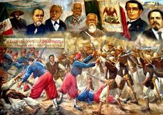

En mayo de 1861, el presidente Benito Juárez anunció la suspensión de los pagos de deuda la mexicana. Como consecuencia, los acreedores que eran Francia, Inglaterra y España firmaron la conocida Convención de Londres por la cual se comprometían enviar contingentes militares hacia el territorio mexicano con el fin hacer valer los derechos como acreedores.
En diciembre del mismo año, llegaron al puerto de Veracruz los primeros militares mientras que en enero de 1862 arribaron las tropas inglesas y francesas. Una vez en el país, los representantes de los tres países acreedores enviaron un ultimátum al gobierno de México exigiéndole el pago de las deudas ya que de lo contrario invadirían el país. Juárez, al ver que la invasión era un riesgo evidente, solicitó negociar para llegar a un acuerdo amistoso al tiempo que derogó el decreto que llevó a los países acreedores a iniciar acciones militares.
El presidente Juárez viendo la posibilidad de una invasión militar a la Ciudad de México ordenó la fortificación de Puebla al mismo tiempo que creó una nueva unidad militar conocida como Ejército de Oriente. Esta en un principio estuvo bajo las órdenes de José López Uraga pero debido a su mal desempeño el mando recayó en las manos del hasta entonces Ministro de Guerra, Zaragoza. Él tuvo la tarea de organizar las fuerzas, que sumaban unos 10.000 hombres, para repeler el ataque del ejército francés.
Los representantes de los países acreedores aceptaron la propuesta de negociación y en febrero de 1862 se reunieron con los ministros Manuel Doblado (Mtro. De Exterior) e Ignacio Zaragoza (Mtro. de Guerra). La reunión se llevó a cabo en la hacienda La Soledad muy próxima a Veracruz. Esta negociación derivó en la firma de los Tratados preliminares de La Soledad mediante los cuales España, Francia e Inglaterra se comprometían a reconocer la independencia del país. En cuanto a la deuda, se aceptó que las negociaciones se realizasen en Orizaba, Córdoba y Tehuacán. En caso de no llegar a un acuerdo, se comenzarían las campañas militares desde las costas.



 3
3 5
5 6
6 8
8